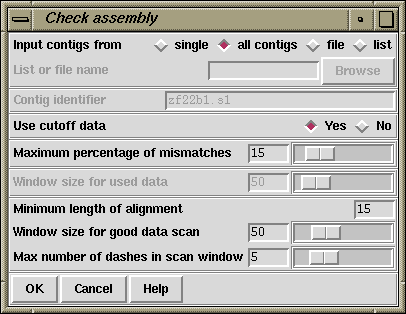

The Check Assembly routine (which is invoked from the gap4 View menu) is used to check contigs for potentially misassembled readings by comparing them against the segment of the consensus which they overlap. It has two modes of use: the first simply counts the percentage mismatch between each reading and the consensus it overlaps, and the second performs an alignment between the hidden data for a reading and the consensus it overlaps. If the percentage is above a user defined maximum, a result is produced. That is, one mode compares the "visible" part of the readings, and the other aligns and compares the hidden data. Results are displayed in the Output Window and plotted on the main diagonal in the Contig Comparator. See section Contig Comparator.
From the Contig Comparator the user can invoke the Contig Editor to examine the alignment of any problem reading. See section Editing in gap4. If the reading appears to be correctly positioned the user can either edit it, or in the case of poor alignment of the hidden data, place a tag, so that it does not produce a result if the search is done again. Note however such data will then also be ignored by the automatic double stranding routine. See section Double Stranding. A typical textual output from the analysis of hidden data is shown below.
Reading 802(fred.s1) has percentage mismatch of 25.86
375 385 395 405 415 425
Reading *CCTGTTTTAAATTG-TGG-C-CCCG*-TTAACCGGGGT*CAAC**CTGGGTTGCTTA
: ::::: :::::: :: : ::::: ::: ::: :::::: ::::: ::::: :
Consensus ACATGTTT*AAATTGATGAACACCCG*AATAAACGGTGT*CAAAA*CTGGATTGCTAA
2929 2939 2949 2959 2969 2979

Users select either to search only one contig ("single"), all contigs ("all contigs"), or a subset of contigs contained in a "file" or a "list". If "file" or "list" is selected the "browse" button will be activated and clicking on it will invoke a file or list browser. If a single contig is selected the "Contig identifier" dialogue will be activated and users should enter a contig name.
Selecting between analysing the visible or hidden data is done by clicking on "yes" or "no" in the "Use cutoff data" dialogue. All alignments that are worse than "Maximum percentage of mismatches" will produce a result in the Output Window and the Contig Comparator. If "Use cutoff data" is selected then dialogue to enable the user to restrict the quality and length of the hidden data that the program aligns is activated. First, to avoid finding very short mismatching regions (where percentage mismatch figures could be very high) users can set a "Minimum length of alignment" figure. Secondly to ensure that the hidden data is not so bad that alignments will necessarily be poor, the program uses the following algorithm. It slides a window of size "Window size for good data scan" along the hidden data for each reading and stops if it finds a window that contains more than "Max dashes in scan window" non-ACGT characters.
To check the used data for each reading ("Use cutoff data" is set to "No") the program compares all segments of size 'window' against the consensus sequence that they lie above (obviously no alignment is required). If the percentage mismatch within any segment is above the specified amount, then the entire 'alignment' of the reading and consensus is displayed. Note that in the output the program will first give the percentage mismatch over the window length, and then the percentage over the whole reading. To check the overall percentage mismatch of readings, simply set the "Window size for used data" to be longer than the reading lengths. To check for divergence of segments within readings set the window size accordingly.
The "Information" window produced by selecting "Information" from the Contig Comparator "Results" menu produces a summary of the results sorted in order os percentage mismatch.
By clicking with the right mouse button on results plotted in the Contig Comparator a pop-up menu is revealed which can be used to invoke the Contig Editor (see section Editing in gap4). The editor will start up with the cursor positioned on the problem reading. If the reading is found to be misplaced it can be marked for removal from within the Editor (see section Remove Reading). However, prior to this it may be beneficial to use some of the other analyses such as Find internal joins (see section Find Internal Joins) and Find repeats (see section Find Repeats), which may help to find its correct location. Both of these functions produce results plotted in the Contig Comparator (see section Contig Comparator) and any alternative locations will give matches on the same vertical or horizontal projection as the problem reading.